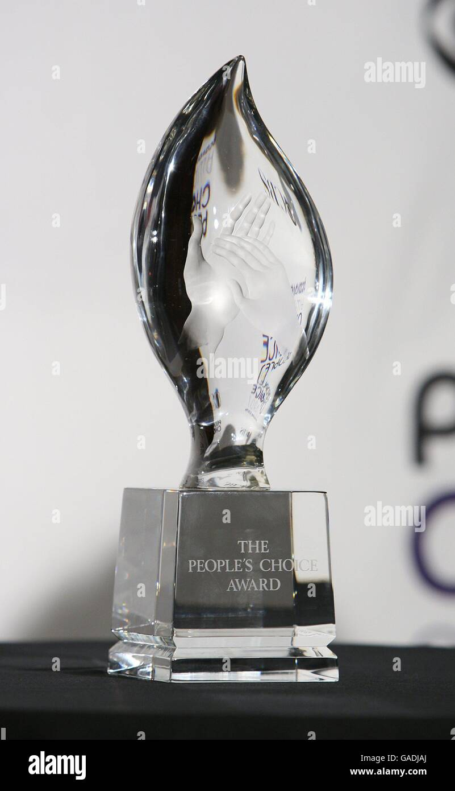

- Se utilizaron climas falsos como por ejemplo efectos especiales para recrear el clima soleado, ya que durante la filmacion el clima era nublado
- Muchas escenas no estaban completamente cerradas en el guion. Los actores improvisaban chistes y diálogos
- Se utilizo una computadora para generar efecto de flecha
Premios y curiosidades
- Adam-sandler alquilo una propiedad en massachusets y animo a todo el elenco (Chris,Kevin,David,Rob) a llevar a sus esposas e hijos para grabar
- Los actores contaron que el director a menudo dejaba la camara rodando y les permitia improvisar, el reto constante era intentar que el otro se saliera del personaje
- son como niños al ser una comedia ligera no compitio en los premios tradicionales como los oscar o los globos de oro, pero si triunfo en las ceremonias donde la audencia es quien vota
- Algunos de los premios o nominaciones importante que tuvo la pelicula fueron, people's choice awards

- Y tambien tuvieron nominacion en Mtv Movie Awards